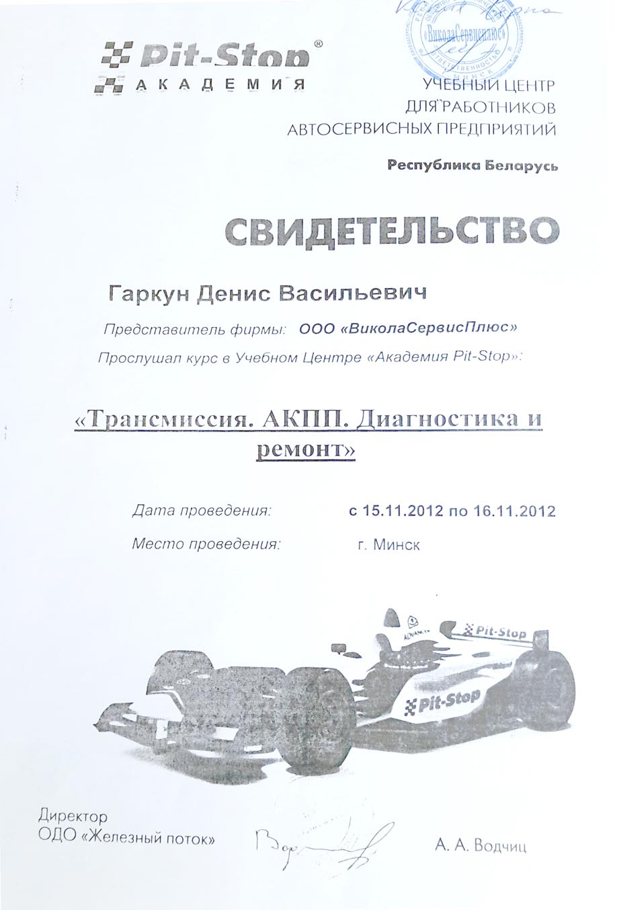
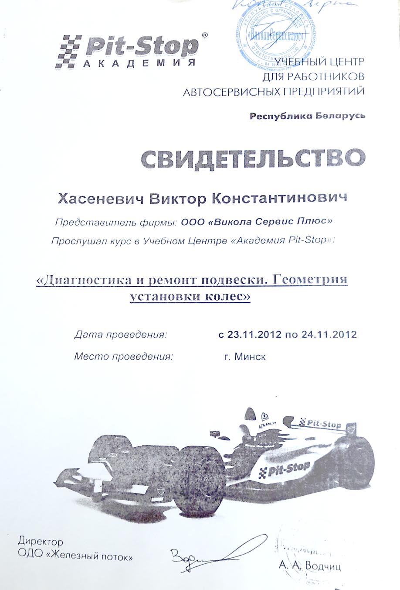
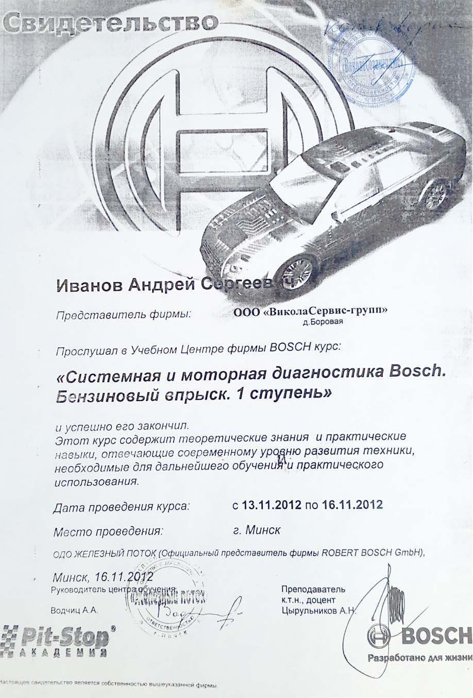

О Нас
Вас приветствует коллектив СТО «ВиколаСервисплюс», более 17 лет мы осуществляем ремонт любой сложности и техническое обслуживание (ТО) автомобилей.
Мы специализируемся на ремонте АКПП (ремонт и гидротрансформаторов), МКПП, ремонте подвески, ремонте бензиновой и дизельной топливной системы, ремонте рулевых реек, у нас широкий спектр услуг и при этом основной и существенный показатель нашей команды — это качество выполняемых работ. Мы несем полную ответственность за качество выполняемых работ, даем гарантию и рекомендации по правильной эксплуатации АКПП после ремонта или замены. Наши специалисты, слесари 6-го разряда, постоянно обучаются и повышают свою квалификацию на Bosch сервисе.
Мы устраняем механические, технические, электрические неполадки вашего автомобиля, а также производим мелкий косметический ремонт.
У нас есть новейшее оборудование для обнаружения невидимых проблем, при помощи дилерского оборудования мы произведем полную диагностику вашего автомобиля.
Также у нас есть услуга выезда автоэлектрика, любого нашего специалиста для устранения неисправности на месте.
У нас доступные цены и действуют разные системы скидок!
Тел.: + 375 29 279 83 38 МТС
+ 375 44 579 83 38 Velcom


